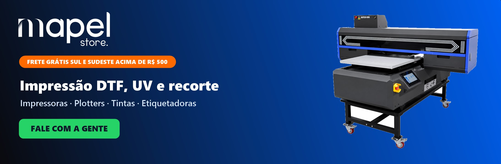

INÍCIO
PLANOS
SOBRE NÓS
FALE CONOSCO
+ CADASTRAR ANÚNCIO

APENAS 3 ANUNCIANTES
Sua marca aqui, para todo o Buritis e região
São só três marcas no topo do guia · Buritis · Estoril · Palmeiras · Havaí · Betânia
QUERO UM DOS 3 ESPAÇOS
Encontre os melhores estabelecimentos do Buritis e região
Perto de mim
Todas as Categorias
Academias, Pilates e Esportes
Advocacia e Contabilidade
Arquitetura e Design de Interiores
Automotivo e Peças
Barbearias
Bares, Adegas e Distribuidoras
Beleza e Estética
Cafeterias, Doces e Confeitaria
Casa, Construção e Reformas
Celular e Acessórios
Clínicas e Médicos
Cursos e Idiomas
Dentistas
Escolas, Creches e Reforço
Estética Automotiva e Lava-jato
Eventos e Festas
Farmácias, Saúde
Fretes e Mudanças
Hortifruti, Açougue e Empórios
Imóveis e Imobiliárias
Informática e Tecnologia
Hambúrguer, Pizza e outros
Lavanderias e Costura
Moda Feminina
Moda Infantil
Moda Masculina
Moda Unissex
Móveis e Decoração
Óticas, Joias e Relógios
Pet Shop e Veterinária
Restaurantes e Gastronomia
Serviços Gerais, Limpeza e Manutenção
Serviços para Condomínio
Som Automotivo e Acessórios
Sorvete, Açaí e Picolé
Supermercados e Padarias
Táxi e Moto Táxi
Terapias e Bem-estar
Turismo e Hospedagem
BUSCAR
USAR MEU CEP
Supermercados e Padarias
Automotivo
Beleza e Estética
Casa, Construção e Reformas
Farmácias, Saúde
Imóveis
Hambúrguer, Pizzas e outros
Pet Shop e Veterinária
Restaurantes
Academias e Pilates
ANÚNCIOS EM DESTAQUE
Confira os principais estabelecimentos do Buritis e região
Carregando anúncios...